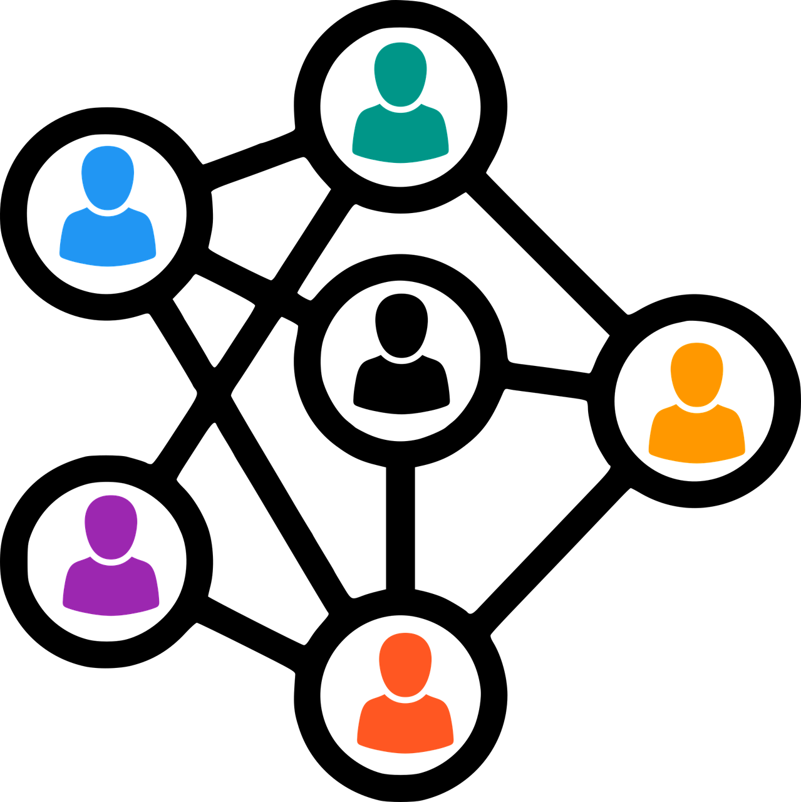

MEC through NFV
MEC through NFV
Orchestration
Integration of Multi Access-Edge Computing (MEC) applications with Network Function Virtualization (NFV) Orchestration
ExploreWhat is our work?
Design and develop a MEC Orchestrator that translates MEC applications into Network Function Virtualizations (NFV's)
Create a Operations Support System (OSS) and a CFS Portal
Create and deploy a showcase-purpose MEC application
Our Journey
Frontend
01
Wireframes and Project Structure
For a start, we planned a well structured design of the pages necessary for our CFS Portal, based on the OSM's aesthetics
02
Pages Development
We then developped the pages using React.js (components and interactions between them)
03
API Integration and Authentication
The final step was to integrate the API endpoints with our interface accordingly, as well as user authentication
Object Detection App
01
Client/Server Integration
Development of a client-server application for object detection using YOLOv3 algorithm
02
Containerization and Publish
Using Docker and K3s, the app was containerized and published on the K3s Cluster.
03
Onboarding as CNF
The Object Detection App (MEC App) was onboarded as a Containerized Network Function
Backend
01
Endpoints and REST Server
The first Backend step was to create a REST Server that would request OSM's services via endpoint calling. The endpoints were made by us and were based on OSM's "needs" using cherrypy.
02
OSS-MEAO connectivity
We then created the OSS and the MEAO (without the MEC App logic) and made it possible for them to communicate with each other using Kafka and MongoDB.
03
MEC App Yang Model and MEAO
The MEC App YANG Model was built, based on ETSI's documentation and then MEAO's translation capabilities were implemented.
Our Team
Here are the brilliant minds that develop this Project
Questions related to our work
What is Multi Access-Edge Computing (MEC)?
Multi-access Edge Computing is a technology where network services, such as cloud services,
are placed in a network edge, closer to the end user.
This approach results in low
latency, with the possibility of increasing bandwidth, reduced network
congestion, real-time operations and analytics, and others.
What Technologies were used?
Frontend: React.js, TypeScript
Backend: Python, MongoDB, Kafka, YANG, osmclient library
Infrastructure: K3s, Docker
Project Management: Github, Github Projects
What is Open Source MANO (OSM)?
Open Source MANO (OSM) is an ETSI hosted project for creation and management/orchestration
of Network Functions Virtualizations (NFV's).
NFV's consist in virtualized network hardware
, such as routers or firewalls
How did we manage our tasks?
We had weekly team meetings to discuss our progress and to make decisions.
The use of Github Projects made it possible for us to describe our tasks,
dividing them into topics and assigning them to the team members.
Some useful links
Github repository of the project
Click HereOpen Source MANO's Website
Click HereSpecial Thanks
We give a special thanks for Professor Diogo Gomes and Pedro Escaleira
for this proposal and for their time and dedication to introduce us to
the advanced topics taught with this project.
Furthermore, we also thank Professors José Moreira and Rui Aguiar for teaching us so much teamwork related topics, sharing their experiences and for the seminars.
Furthermore, we also thank Professors José Moreira and Rui Aguiar for teaching us so much teamwork related topics, sharing their experiences and for the seminars.